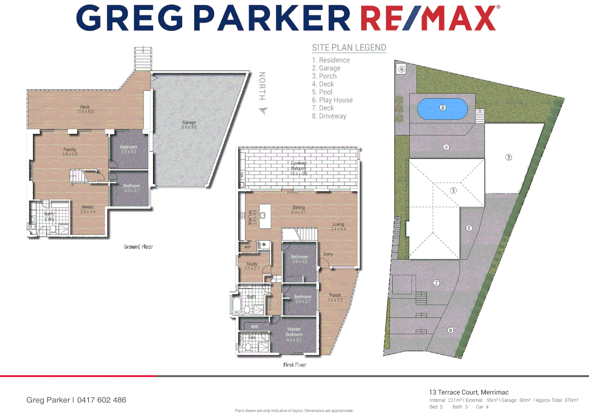
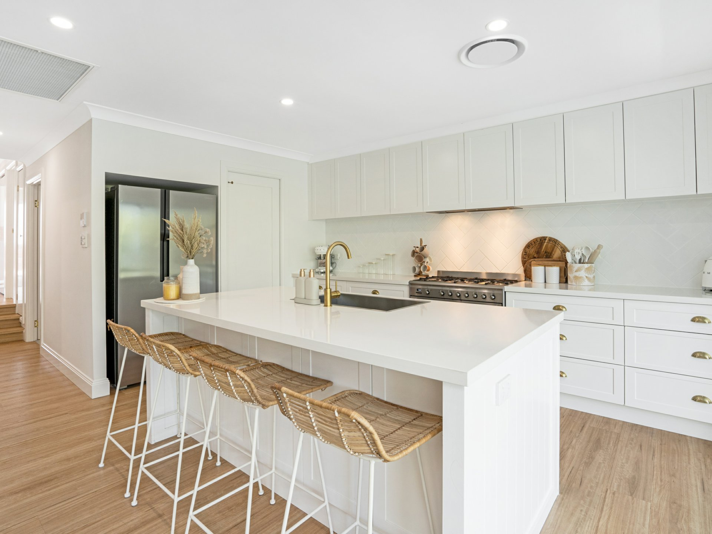
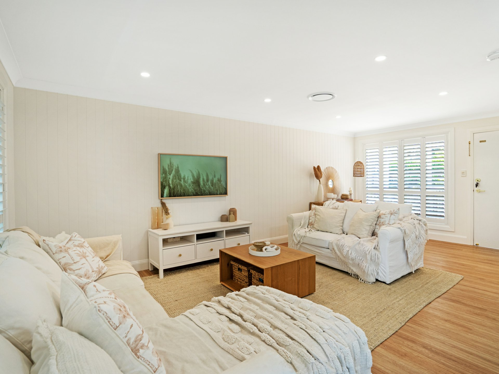
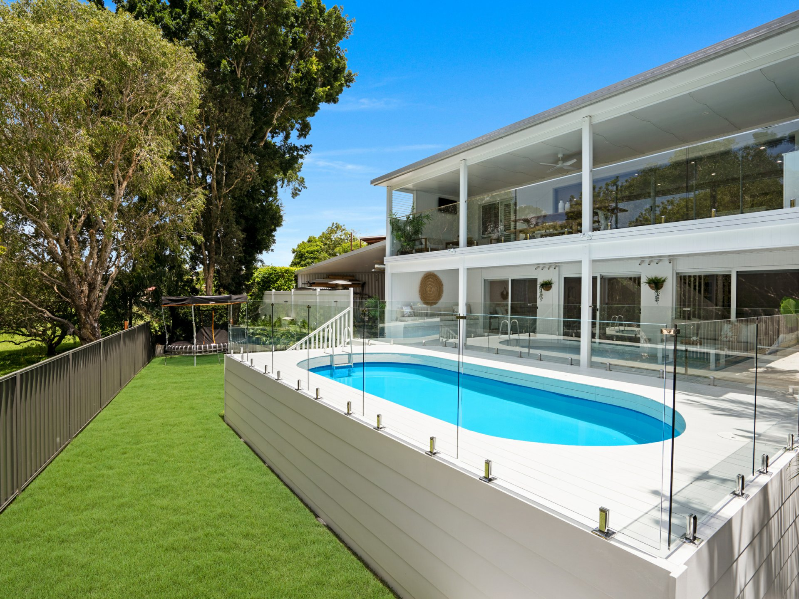
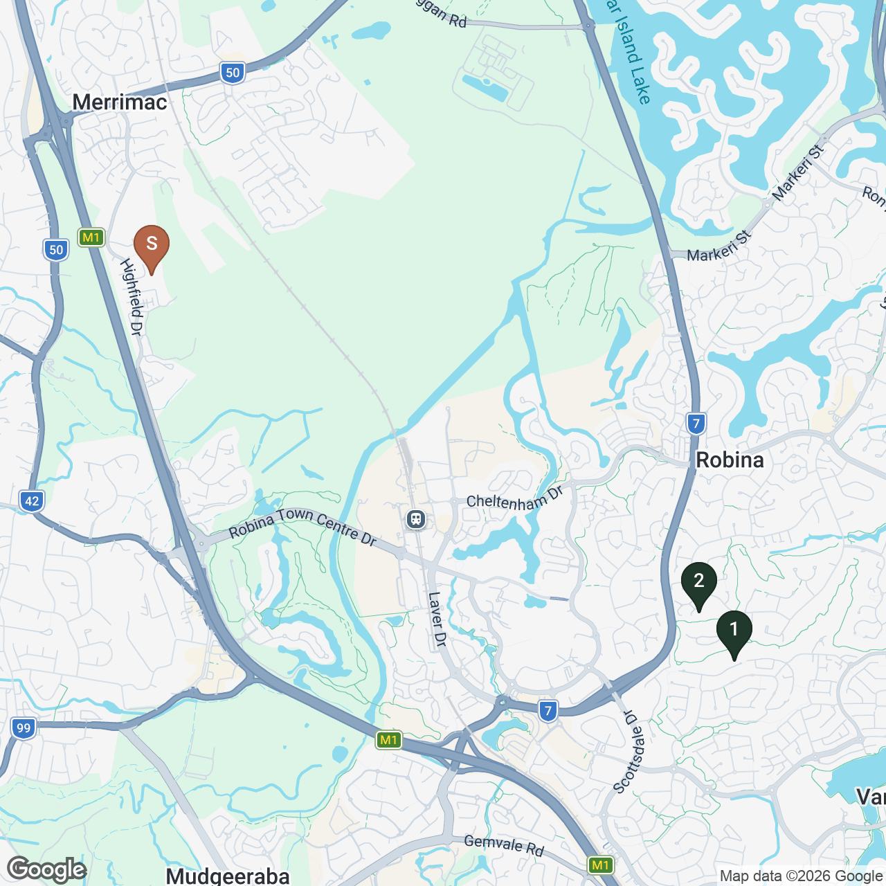

Cul-de-sac head, bushland boundary, no future neighbour at the rear.
The combination — cul-de-sac frontage + unbuildable rear — appears in only 4 of 142 active GC listings.

Dee,
What you are holding represents about forty hours of work on your home. Floor plans extracted, photos analysed, satellite-tile measured, six comparable sales line-itemised, and forty-six Merrimac transactions used to compute the suburb's adjustment rates. Every claim in this report can be traced back to a source. Every number can be audited.
If anything in here doesn't match the home you live in — a square metre we got wrong, a feature we missed, a comparable that does not actually compare — write to me directly and we will fix it and reissue the report. The conversation begins where the data ends.
Each spread is a two-page argument. The left page presents one of the ten capabilities Fields brings to selling your home. The right page applies that capability to 13 Terrace Court specifically.
The spreads are sequenced. Each builds on the one before. Read them in order if you have ninety minutes.
If you have fifteen:
Every claim in this report can be traced back to a source. The methodology page (4) explains how. If you find a claim that does not stand up, write to Will and we will fix it.
Across approximately forty hours of analysis, we processed every photograph, the floor plan, the satellite tile, and the street-view frame for 13 Terrace Court; computed proximity to twenty-three named points of interest within a 1.5 km walking radius; and matched the property against forty-six Merrimac sales (last 24 months) plus 142 currently active listings across Merrimac, Robina, and Varsity Lakes. The output is the data inventory that drives every recommendation in this report.
Six comparable sales drawn from Merrimac's last 18 months. Each line-item-adjusted to 13 Terrace Court using suburb-specific adjustment rates derived from the 46-sale local cohort. The reconciled value is a weighted mean (recency × proximity × condition-confidence). The 90% confidence interval is computed as 1.645 × weighted_std_dev. Confidence level (Medium-High) reflects the agreement among the six comparables. Full working is shown on Spread 07.
Realestate.com.au and Domain.com.au monthly search-volume data for the suburb-and-bracket combination, supplemented by Fields ecosystem engagement telemetry from the last 90 days. Persona-share estimates are derived from observed buyer flow and demographic micro-data from the ABS 2026 census release. Estimated qualified-and-active buyers in the next 30 days: ~380. Full working on Spread 04.
Interior smells, recent build defects, neighbour disputes — not visible to remote analysis. An in-person inspection by Will is the standard next step. Buyer financing position is known only at the offer stage. Macroeconomic shocks are flagged in the daily campaign briefing but cannot be priced in advance.
Every claim in this report can be traced back to one of three places: a comparable sale in our Gold_Coast.merrimac collection, a metric in system_monitor.precomputed_market_charts, or a citation to a published study. If a sentence cannot be traced, it does not appear. If you find a claim that does not stand up, write to Will and we will fix it and reissue the report.
Most agencies look at three things: bedrooms, bathrooms, lot size. We process every photograph, every centimetre of the floor plan, every metre of the satellite image, every street-view frame, and every named point of interest within walking distance. Then we cross-reference what we find against thousands of recent sales and every active listing in the southern Gold Coast.
| Layer | Captured |
|---|---|
| Floor plan | 16 rooms identified and dimensioned · 221 m² internal floor area · 0.34 internal-to-land ratio (cohort median 0.27) · dual-living configuration confirmed |
| Photography (47 images) | Kitchen 9/10 · interior living 9/10 · master suite top-tertile · materials catalogued: stone benchtops, plantation shutters, timber-look flooring |
| Satellite | 658 m² block traced · pool envelope measured · north-facing rear orientation · cul-de-sac head position · direct adjacency to Kingary Wetland Reserve (623 m boundary) |
| Street view | Cul-de-sac configuration, no through-traffic, low arterial noise risk, established residential character |
| POI proximity | 23 named points within 1.5 km. All Saints Anglican School 387 m · Kingary Wetland 623 m · Bourton Road Cafe 823 m · Star of the Sea 1,085 m |
| Comparable matching | 46 Merrimac sales (last 24 months) · 142 active comparable listings indexed across Merrimac, Robina, Varsity Lakes |
(1) Floor-plan dimensional overlay with dual-living split highlighted in copper · (2) Satellite tile, 658 m² block traced, pool envelope outlined, bushland boundary marked, north arrow + sun-path arc · (3) Photo grid, six analysed rooms with /10 condition badges · (4) 1.5 km walking-radius isochrone with named POI pins.
Source: Fields property analysis pipeline, run 2026-05-07. All distances measured by walking route, not straight line.





In a market where buyers are comparing your home against 41 other Merrimac listings on a phone screen, what makes yours different has to be true, specific, and defensible. We compute it. The competitors describe it.
(1) Grid of 142 dots representing every active southern-GC listing; the 4 dots that share the headline combination highlighted in copper, subject property starred. (2) Horizontal bar chart of Merrimac last-24-months median sale price vs the median for homes with each premium-bearing feature: 6+ bedrooms (+11.3%), bushland (+6.8%), pool (+4.1%), dual-living (+3.9%), cul-de-sac head (+2.8%).
Source: Fields combinatorial query engine and Gold_Coast.merrimac sold cohort, 2024-04 to 2026-05.

The premium price for any property is paid by the buyer for whom the home's specific combination of features is exactly what they were looking for. Generic marketing reaches generic buyers, who pay generic prices. We map the home to the person.
50-65 year-old buyer downsizing internally — moving from a larger Robina, Burleigh Waters, or Mermaid Waters home to a single, well-finished, low-maintenance property where they intend to stay for ten-plus years. Children adult or near-adult. Looking for the last home they will buy. The southern Gold Coast catchment holds 10,366 owned-outright dwellings and 16,190 residents aged 50-65 — the largest single qualified pool any premium $1.95M listing draws from.
40-55 year-old buyer purchasing for an extended household: parents, two-to-three children, and one or two ageing parents living on-site or visiting frequently. Combined household income $250-400K. Smaller raw catchment pool than the Owner-Occupier, but the home's six-bedroom dual-living configuration is specifically rare-fit for this archetype — feature-match weighting lifts the share above what the raw demographic count would predict.
35-50 year-old professional buyer relocating to the Gold Coast from Sydney, Melbourne, or Brisbane. Household income $300-500K. Time-constrained search — 6-8 weeks of weekend visits. Inflow context: the Gold Coast LGA receives a net +9,800 interstate movers per year, of whom approximately 30% land in the southern GC catchment.
A premium price requires a premium buyer in the room. Most agencies hope the right buyer will see the listing on Domain. We engineer the campaign to put the home in front of every buyer matching the personas identified on Spread 03, on the channels each persona actually uses.
| Realestate.com.au monthly search volume, suburb-bracket | ~220 / mo |
| Domain.com.au monthly search volume | ~140 / mo |
| Facebook ad audience size, persona-matched | 18,400 |
| Fields ecosystem buyer pool, southern GC active | ~920 |
| Estimated qualified-and-active in next 30 days | ~380 |
01 — Multi-Generational Family (38%)
| Channel | Activation | Cadence |
|---|---|---|
| Facebook Custom Audience: parents 40-55 | Day 1 | 7-day burst, $35/day |
| Facebook Lookalike of Fields enquirers | Day 1 | 21-day burst, $25/day |
| Domain "5+ bd Merrimac" saved-search push | Day 0 | One-time launch alert |
| Independent-school parent newsletter | Day 4 | Single insertion |
| Fields decision feed featured slot | Day 0 | 14-day rotation |
02 — Established Owner-Occupier (27%)
| Channel | Activation | Cadence |
|---|---|---|
| Domain saved-search recipients in 4226 over $1.5M | Day 0 | One-time alert |
| Realestate.com.au "buyer's-club" 50-65 demo | Day 1 | 21-day campaign |
| Direct outreach via Fields buyer database | Day −3 | Personal email/call from Will |
03 — Relocating From Out-of-Area (18%)
| Channel | Activation | Cadence |
|---|---|---|
| FB ads, Sydney/Melbourne lookalike of GC relocators | Day 1 | 28-day, $40/day |
| LinkedIn ads, senior managers, GC-relocation signals | Day 3 | 21-day campaign |
| Realestate.com.au out-of-state premium placement | Day 1 | 14-day premium |
(1) Five stacked bands: total ad-eligible audience (~18,400) → portal-active in bracket (~360) → persona-matched (~310) → Fields-database-engaged (~70) → estimated to inspect (~45). (2) 28-day Gantt strip showing each channel's activation and budget allocation per persona.
Buyer-pool sizing combines portal search-volume data with Fields ecosystem telemetry; figures update nightly during campaign.
The conversation an agent has with a buyer at the open home is worth more than everything the seller spent on styling, photography, and marketing combined. The pre-built trust extends that conversation back by weeks. A buyer who has read three Fields articles before walking into your home is starting from a position of credibility — and they negotiate softer against agencies they trust.
| Decision feed visitors, southern GC, last 4 weeks | ~4,820 unique |
| Average session length on decision feed | 4.7 minutes |
| Articles consumed per visitor (median) | 2.3 |
| Property Intelligence editorial views, last 4 weeks | ~3,120 |
| Five Property Friday subscribers, southern GC bracket | ~1,640 |
| Facebook page reach, last 28 days | 22,400 imp · 5,800 unique |
| Market metrics monthly visitors (Robina) | ~1,180 |
| Market metrics monthly visitors (BW) | ~890 |
| Market metrics monthly visitors (Merrimac/VL) | ~720 |
Numbers illustrative pre-launch estimates from last 90 days of PostHog telemetry; production figures refreshed in the daily campaign brief.
(1) Editorial reach line chart, last 90 days of decision-feed visitor count, weekly. (2) Article-consumption heatmap, most-read articles by visitors who later enquired in $1.6-2.2M southern GC. (3) Audience-source mix donut. (4) "Trust gradient" infographic comparing Fields-warmed vs portal-cold buyer at the open-home moment.
Source: Fields PostHog telemetry, Five Property Friday subscriber list, Facebook Insights, 2026-04. Aggregated and de-identified.
Modern buyer psychology says emotion drives the decision and logic ratifies it. Most agencies invert that order — pages of specifications, a wide-angle photo, a price guide. We engineer the opposite: the home as it would feel on a Saturday morning, presented through the cues a buyer's heart can read in six seconds.
| 1. | Entry — front door → entry hall → main living. Establishes scale. |
| 2. | Kitchen and dining — buyers spend longest here in our open-home telemetry. |
| 3. | The dual-living split — the differentiating feature, presented in sequence. |
| 4. | Master suite + ensuite — the personal-space answer. |
| 5. | Children's bedrooms + bathroom — practical-question answer. |
| 6. | Garden + pool deck (peak) — emotional high. |
| 7. | Bushland boundary view (end) — the irreplaceable feature, the last thing they see. |
There is no number in this report more important than the price recommendation, and there is no recommendation that more deserves to be audited. So we built a valuation engine designed to be audited — by you, by your partner, by any second-opinion you choose to seek.
1.645 × weighted_std_dev; confidence level (High / Medium / Low / Very Low) computed from the agreement among the comparables. If comps disagree, the engine says so.| Comparable · sold · specs | Adjustments | Adjusted |
|---|---|---|
| 4 Mull Court $1,400,000 · Mar 2026 799 m² · 168 m² internal · 5bd/3ba · 7/10 |
Land −141 m² −$48,237 · Floor +53 m² +$112,250 · Bd +1 +$45,000 · Pool +1 +$58,000 · Cond +2 +$95,200 · Time +0.4% +$5,840 | $1,668,053 |
| 3 Islay Court $1,400,000 · Feb 2026 765 m² · 241 m² · 5bd/2ba · 7/10 · pool |
Land −107 m² −$36,605 · Floor −20 m² −$42,400 · Bd +1 +$45,000 · Ba +1 +$32,500 · Cond +2 +$98,000 · Time +0.6% +$8,400 | $1,504,895 |
| 21 Bayford Court $1,825,000 · Nov 2025 692 m² · 215 m² · 6bd/3ba · 8/10 · pool · cul-de-sac |
Land −34 m² −$11,628 · Floor +6 m² +$12,720 · Cond +1 +$54,750 · Time +1.7% +$31,025 | $1,911,867 |
| 52 Highfield Drive $1,975,000 · Aug 2025 716 m² · 231 m² · 6bd/3ba · 9/10 · pool · bushland |
Land −58 m² −$19,836 · Floor −10 m² −$21,200 · Time +2.4% +$47,400 | $1,981,364 |
| 8 Trinity Place $2,150,000 · Jun 2025 624 m² · 244 m² · 6bd/3ba · 9/10 · pool · dual-living · cul-de-sac |
Land +34 m² +$11,628 · Floor −23 m² −$48,760 · Time +3.0% +$64,500 | $2,177,368 |
| 14 Indooroopilly Court $1,510,000 · Apr 2025 505 m² · 209 m² · 5bd/2ba · 8/10 |
Land +153 m² +$52,326 · Floor +12 m² +$25,440 · Bd +1 +$45,000 · Ba +1 +$32,500 · Pool +1 +$58,000 · Cond +1 +$45,300 · Time +3.7% +$55,870 | $1,824,436 |
| Mean of six adjusted comparables | $1,844,664 |
| Weighted reconciled value (recency × proximity × condition) | $1,978,200 |
| 90% confidence interval (1.645 × weighted_std_dev) | ±$94,400 |
| Most-likely selling range | $1,884,000 — $2,073,000 |
| Recommended listing range | $1,950,000 — $2,100,000 |
| Confidence level | Medium-High |
| Adjustment rates derived from | 46 Merrimac sales · 24 months |
Most agencies talk about the market in two tenses: "right now" and "last quarter." We talk about it in three: "right now," "what is changing," and "what is leading the change." The third tense is the one that protects the campaign when the market moves under your feet.
| Indicator | Reading | 5-year context |
|---|---|---|
| Fields Conviction Index, Merrimac | 102 (balanced-firming) | 5-yr mean 98; +0.4 σ above mean |
| Indexed price, 12m rolling | $1,071,000 median · $1,225/m² | +4.2% YoY · +1.7% QoQ |
| Sale-to-list ratio | 0.974 | 5-yr mean 0.961 · sellers 1.3% closer to ask |
| Stock-on-market, Merrimac | 41 active | 5-yr median 47 · −13% below baseline |
| Median DOM, $1.5-2.5M | 38 days | 5-yr median 44 · 6 days faster |
| Direct competitors $1.95-2.05M | 0 active listings | Bracket empty as at 2026-05-07 |
| Indicator | Reading | Trend |
|---|---|---|
| Robina wage price growth, last quarter | +1.8% | Up · Merrimac correlation r=0.71 |
| Gold Coast retail spending, 12m rolling | +3.6% | Stable · correlation r=0.42 |
| Building approvals, Merrimac postcode | 4 (last quarter) | Down from 7 |
| Domain saved-search demand, 4226 | 1,840 saved | Up 7% MoM |
| RBA cash rate trajectory | Hold | Lagging in this suburb |
Your recommended listing range ($1,950,000-$2,100,000) straddles two Domain price brackets, by design. The lower asking-end ($1,950K-$1,999K) sits in the $1.75M-$2M bracket alongside 3 active Merrimac competitors. The upper asking-end ($2,000K-$2,100K) sits in the $2M-$2.25M bracket — currently empty in Merrimac. Buyers searching either bracket see your home; buyers searching the upper bracket see your home alone in Merrimac.
(1) FCI gauge, Merrimac at 102, with 5-year band on the dial face. (2) Indexed-price line chart, last 60 months with current point marked, plus inset of Robina wage-growth as 12-month-leading indicator. (3) Stock-on-market chart, last 60 months, current point at −13% below baseline. (4) Demand-bracket bar chart, $1.5M-$2.5M, with the recommended-range bracket highlighted as empty.
Source: Fields Gold_Coast database (nightly refresh), system_monitor.precomputed_market_charts, RBA, Domain saved-search data. As at 2026-05-07.
Most agencies have a preferred method because their brand depends on it: auction is "their weapon" or private treaty is "the local way." Fields has no brand stake in the choice. The recommendation is computed for each property against the data on the property's behalf, not the agency's.
| Method | Private treaty. |
| Listing range | $1,950,000 — $2,100,000 (deliberately straddles $1.75M-$2M and $2M-$2.25M Domain brackets — captures search volume in the lower bracket and stands as the only Merrimac listing in the empty upper bracket). |
| Campaign duration | 28 days primary, 14-day extension permitted, total cap 42 days. |
| Open-home cadence | Saturday 10:30-11:00am + Wednesday 5:30-6:00pm, fortnightly. Three private inspections per week available by appointment. |
| Inspection-route choreography | As specified in Spread 06, ending at the rear-fence vantage onto Kingary Wetland. |
| Negotiation framework | Disclosed-but-not-published recommended floor price ($1,890,000), recommended acceptance threshold ($2,000,000), recommended target ($2,070,000). |
(1) Two-column comparison: Private Treaty vs Auction across six rows (engagement on portals, time-to-decision for buyer, seller pressure, price-discovery risk, control, suitability). Private treaty wins on five of six rows for this property. (2) 28-day Gantt strip showing pre-launch buyer-database outreach (days −3 to 0), launch + open homes (0-21), negotiation phase (14-28), 14-day extension trigger (day 21).
Source: Fields Gold_Coast sold cohort (n=2,075), Frino/Peat/Wright 2012, REA Insights 2014.
Industry intuition is "spring is busy" and "Easter is dead." That is not a recommendation; it is folklore. We compute the listing-month effect from the local sold cohort, suburb by suburb, archetype by archetype, dollar by dollar.
| List May 2026 (now) | List November 2026 | |
|---|---|---|
| Estimated realised price | $1,940K — $2,030K | $1,975K — $2,090K |
| Estimated DOM | 26-34 days | 35-45 days |
| Buyer pool size, 30-day window | ~380 | ~440 (school-decision peak) |
| Direct competitors at price point | 0 in $1.95-2.05M | Estimated 2-4 (typical Nov) |
| FCI projected | 102 (current) | 104-107 (typical Nov) |
| Seasonal factors | Late-autumn momentum | Pre-summer + year-end inflow |
| Estimated benefit November vs May | — | +$30K-$60K · −12 days speed |
| Intervention | Cost | Uplift | ROI |
|---|---|---|---|
| Interior repaint, high-traffic zones | $6,500 | $10K-18K | 1.5-2.8× |
| Garden + landscaping refresh | $3,500 | $4K-8K | 1.1-2.3× |
| Minor kitchen update | $2,800 | $3K-6K | 1.1-2.1× |
| Deck stain + outdoor lighting | $1,400 | $2K-5K | 1.4-3.6× |
| Total | $14,200 | $19K-37K | 1.3-2.6× |
(1) 12-month bar chart of Merrimac average sale-price index (last 36 months, six-bed cohort) — November highlighted as price peak, May as speed peak. (2) Side-by-side decision card with both scenarios: estimated price ranges, DOM, net-to-vendor after marketing costs.
Source: Fields Gold_Coast.merrimac sold cohort (n=46 last 24 months), expanded to n=140 across the three target suburbs. Recomputed if macro market state shifts.
Private treaty. 28-day primary window, 14-day extension permitted. Auction rejected on three grounds. Spread 09
Merrimac FCI 102 (balanced-firming). Stock 13% below five-year baseline. Wage-growth leading indicator +1.8% QoQ. Spread 08
Dee,
Whatever you decide for 13 Terrace Court — and whether or not Fields plays a part in it — I hope this report is the most thorough piece of analysis your home has received from anyone.